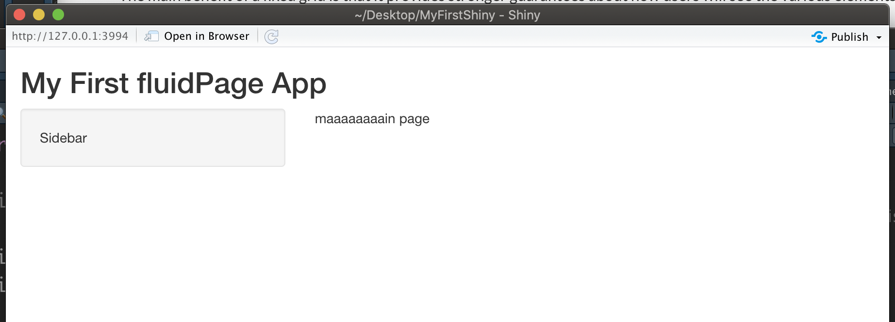
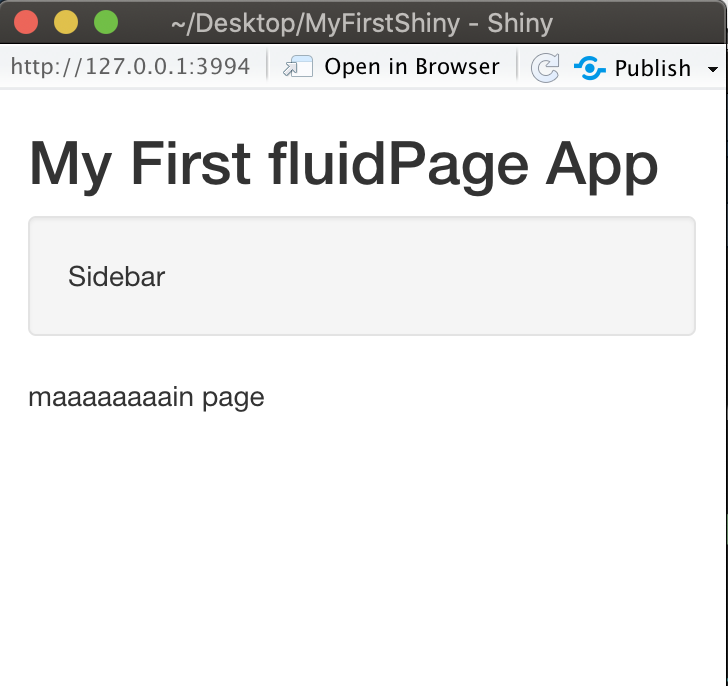
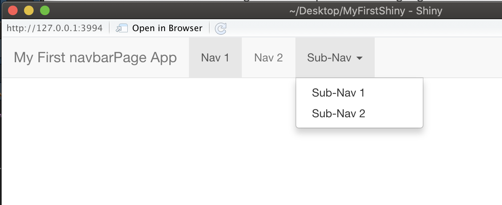
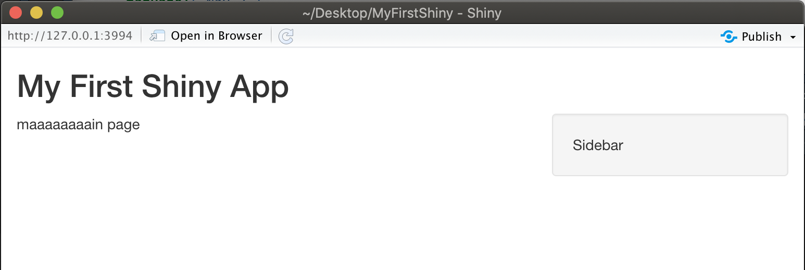
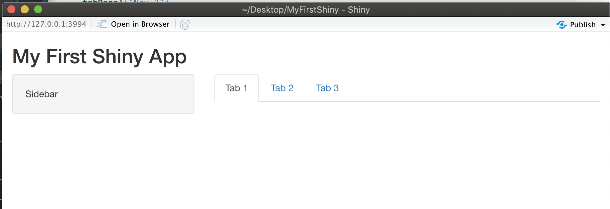
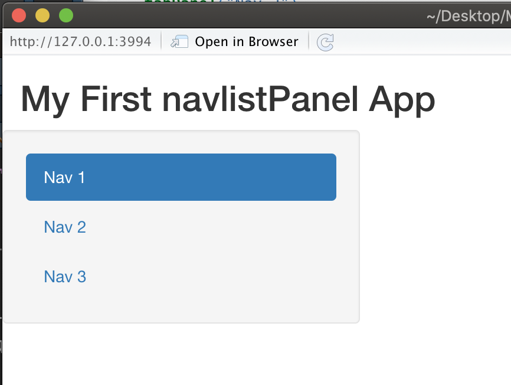
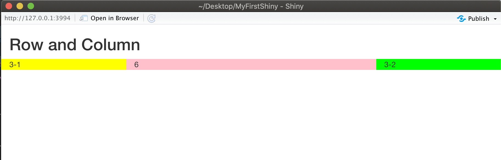

Ch 3 版面設定
3.1 頁面設定函數xxxPage()
為了建構使用者介面(User Interface) (前端)，基本的程式碼為:
其中fluidPage()為整合輸入輸出元件的函數為頁面設定函數，本章節將介紹建構各種頁面設定函數xxxPage()的使用方法。
最常見的頁面設定函數為範例中的fluidPage()，其他頁面設定函數包括fixedPage()、navbarPage()等，其差異條列如下:
fluidPage(): 頁面會依照瀏覽器的大小自動調整頁面元件的大小與位置，最常見且建議使用fixedPage(): 頁面會固定大小，可搭配fixedRow()排版navbarPage(): 建構有上方選單的頁面，選單可用tabPanel()設定bootstrapPage(): 很會HTML/CSS的使用者可使用此函數，客製化設定頁面fillPage(): 會生成一個將整個瀏覽器視窗填滿的頁面，只有在特殊情況下才會選用此函數
以fluidPage()為例，以下呈現同一程式碼在不同視窗大小的效果：
fluidPage(
titlePanel("My First fluidPage App"),
sidebarLayout(
sidebarPanel("Sidebar"),
mainPanel("maaaaaaaain page")
)
)視窗大小足夠時：

視窗縮小時：

也因此使用fluidPage()時，若使用者用手機或是解析度較差的裝置使用Shiny App，版面會自動調整成適合的樣子，是Shiny App預設且最常用的頁面設定函數。
使用navbarPage()則可快速建立有上方選單的網頁，選單可用tabPanel()設定，若用子選單，可將多個tabPanel()組合成子選單，並用navbarMenu()載入
navbarPage(
title="My First navbarPage App",
tabPanel("Nav 1"),
tabPanel("Nav 2"),
navbarMenu(
"Sub-Nav",
tabPanel("Sub-Nav 1"),
tabPanel("Sub-Nav 2")
)
)navbarPage()範例：

3.2 xxxLayout() 和 xxxPanel()
在選擇完適當的頁面設定函數後，可依需求選擇特定版型(layout)與版面(panel)，通常在版型(layout)中，會再使用版面(panel)函數做更進一步的設定，當然也可直接在頁面設定函數中直接使用版面(panel)函數。最常使用的函數為titlePanel()與sidebarLayout()，titlePanel()用來設定標題，而在sidebarLayout()函數中會用sidebarPanel()與mainPanel()做出有側邊攔與主頁的版型，範例程式碼如下:
fluidPage( #頁面設定函數
titlePanel("My First Shiny App"), #標題版面(panel)
sidebarLayout( #版型(layout)
sidebarPanel("Sidebar"), #側邊欄位版面(panel)
mainPanel("maaaaaaaain page") #主頁版面(panel)
)
)使用titlePanel()與sidebarLayout()所設定的版面如經典的直方圖Shiny範例程式：

由範例與名稱可知，sidebarLayout()函數可生成側邊欄位加上較大主頁面的常見版型，也因此sidebarLayout()版型函數的必要參數有：
- sidebarPanel()：側邊欄位版面
- mainPanel() ：主頁版面
另外，可透過position = "right"參數調整側邊欄位的位置，預設是左邊
fluidPage( #頁面設定函數
titlePanel("My First Shiny App"), #標題版面(panel)
sidebarLayout( #版型(layout)
position = "right", #調成右邊
sidebarPanel("Sidebar"), #側邊欄位版面(panel)
mainPanel("maaaaaaaain page") #主頁版面(panel)
)
)
在各版面(panel)函數中，可直接放入輸入輸出元件，若有更複雜的排版需求，如分頁等，就會在mainPanel() 主頁版面或其他地方放入更多的版面做進一步的調整，如使用tabsetPanel()加入分頁：
fluidPage(
titlePanel("My First Shiny App"), #標題版面(panel)
sidebarLayout( #版型(layout)
sidebarPanel("Sidebar"), #側邊欄位版面(panel)
mainPanel( #主頁版面(panel)
tabsetPanel(
tabPanel("Tab 1"),
tabPanel("Tab 2"),
tabPanel("Tab 3")
)
)
)
)
若因所需分頁太多，tabsetPanel()無法滿足需求時，navlistPanel()是另一個不錯的選項，預設樣式是將選單排在側邊：
fluidPage(
titlePanel("My First navlistPanel App"),
navlistPanel(
tabPanel("Nav 1"),
tabPanel("Nav 2"),
tabPanel("Nav 3")
)
)
3.3 row 與 column
在fluidPage()中，也可直接使用fluidRow()和column()函數做行與列的排版，通常會先排列 (row)，再排行 (column)，每行 (column)通常分為12等分，若想設定大概頁面四分之一的寬度，則寬度就設為3 (12/4=3)，下列範例特別將各column區塊著色，以方便辨識各column的寬度。
fluidPage(
titlePanel("Row and Column"),
fluidRow(
column(width=3,"3-1", style = "background:yellow;"),#黃色
column(width=6,"6", style = "background:pink;"),#粉紅色
column(width=3,"3-2", style = "background:lime;")#綠色
)
)
使用上述Page、Layout與Panel等函數，即可將應用程式的使用者介面做系統性的設計。完成各區塊的劃分後，下一步則是在Panel中放置輸入元件 (4)與輸出元件 (5)。